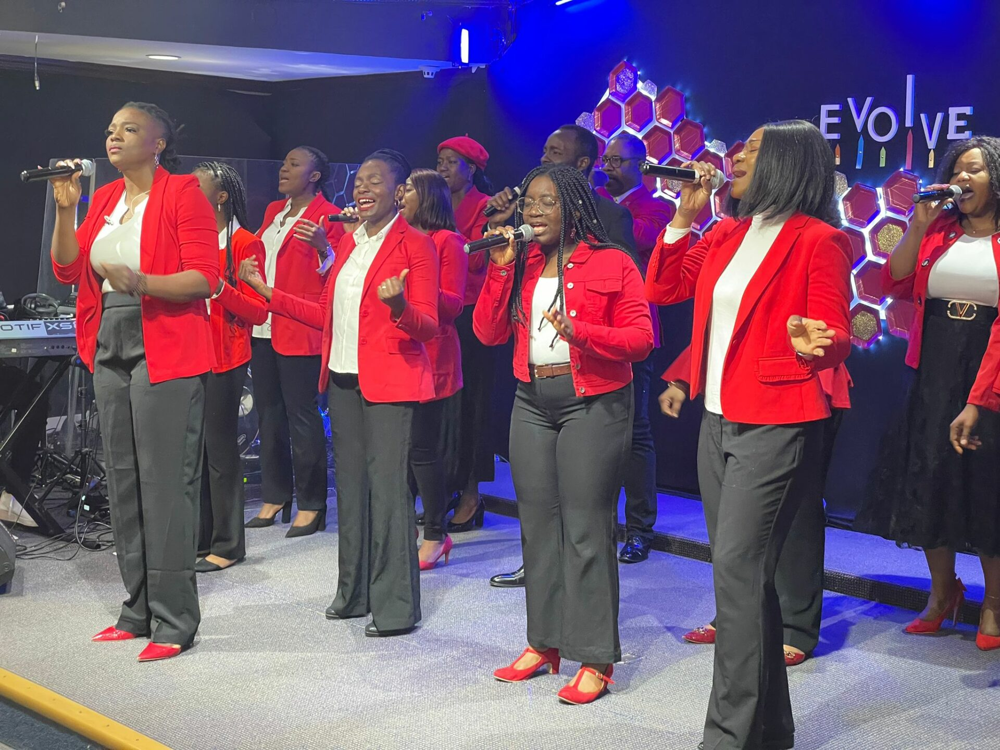
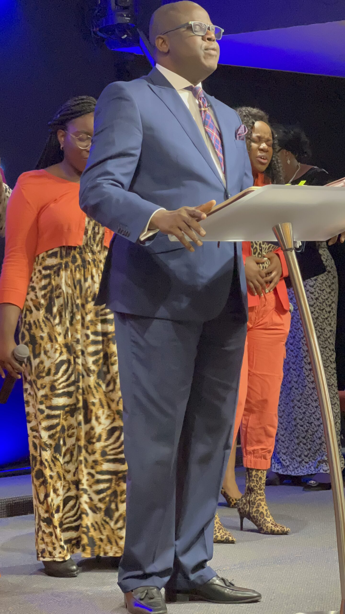
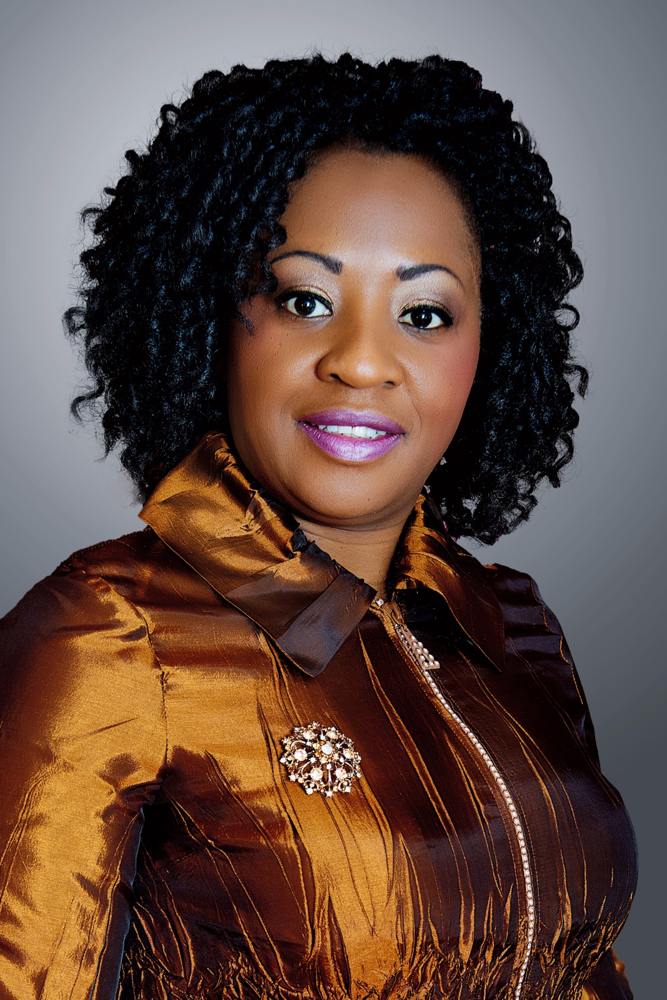

01
At MSC we BELIEVE that the blood of Jesus washes clean all repentant sinners hence we are fit to approach the MERCY SEAT of GOD.
At Mercy Seat Chapel we come together to obtain Mercy and Grace to actualize our vision. Hebrews 4:16.
MERCY SEAT CHAPEL is a mission of The Redeemed Christian Church of God (RCCG). We are bible-believing, multi-racial, loving and family oriented followers of Jesus Christ.
The church was founded in 1952 and since then, the church has grown to over 10,000 parishes worldwide with a total congregational strength of over one million people. The General Overseer of the church is Pastor E.A. Adeboye.
Let us then fearlessly and confidently and boldly draw near to the throne of grace, that we may receive mercy and find grace to help in good time for every need.Hebrews 4:16

At MSC we BELIEVE that the blood of Jesus washes clean all repentant sinners hence we are fit to approach the MERCY SEAT of GOD.
At MSC we BELIEVE that as children of God, we are over comers by the MERCIES of God which he intends for believers so as to experience the life of GRACE He has promised us all.
At MSC we BELIEVE that every believer should be in a growing relationship with Jesus by obeying God’s Word; hence through the Holy Spirit we decrease in SELF and increase in HIM, as we are being conformed to the image of Christ.
In all sphere of life, and certainly in the Christian life too, we need to be inspired, challenged and given a vision of something better, grander and more challenging. This is obviously true in the sporting world where the phrase “raise the bar” comes into play.
Whether it is the pole vaulter or the high jumper, the bar is raised so that an even greater sporting accomplishment can be attempted. And all great athletes crave this: they don’t want to settle for second best, or that which is easily obtainable. They press on for the best, and in this case, the highest. They are not interested in the ordinary, but want to be the very best in their sport, and raise the bar even higher. They want to lead the way and set the standard. Life is meant to be like that, especially the Christian life.
Christians should not be ordinary or average in any endeavor in life. We have great potential inside us. There are things God wants each of us to do that no one else can do. And through Christ, we have been given everything we need to be successful. However, too many Christians have become satisfied with where they are and never go any further. Some never come close to achieving their potential.
We don’t have to settle for average. Living an average life is like talking on a cell phone when it only has a couple of bars on the screen. It isn’t receiving a very strong signal. The phone is operating, but it cuts in and out or drops calls completely. God wants us to raise the bars in our lives. He has a way for us to live on a level of full bars.
We need to raise the bar. Indeed, with Jesus Christ as our ultimate standard, and his command that we be perfect as our Father in heaven is perfect (Matthew 5:48), every single Christian has to continuously set the bar as high as it can go.
Welcome to Mercy Seat Chapel.


God has also promised that there will be a constant flow of oil in order to remain above and not beneath. The oil signifies the Spirit of God, His gifts and graces. Even when a wild ox has its head bowed down to drink water the head always remains elevated. This is the grace of God. In all your endeavors this year, even when the enemy tries or threatens with failure, struggle, sickness, divorce or grief like the head of a unicorn and by the grace of God you will come out victorious.

Spiritually, standing tall means standing above sin and unrighteousness. The grace to live holy and pure. It also means rising above the forces of the enemy. Anything that struggles to overcome one’s victory in life is an enemy.
Join us on Sundays at 10:00 AM in person, or worship with us online.